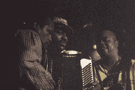
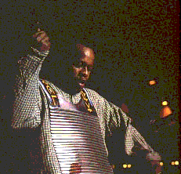
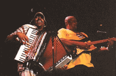
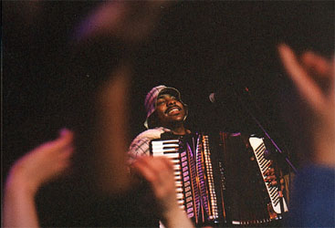

 Молодежь Лил Брайан и "Зайдекоу тревеллерз" представляют эксперимент по смешиванию традиций и нынешних танцевальных стилей. Лил из Луизианы, и играет местную народную музыку на аккордеоне: "зайдекоу" и "кейжун". В составе его группы есть и музыкант, играющий на "стиральной доске" (гофрированный жестяной лист), который ритмичным треском придает подстегивающий ритм  гудящему аккордеону - что абсолютно типично для этих стилей. Но это лишь экзотическая начинка для общего фанкового звучания группы. Любопытно, что свою карьеру Лил начинал во вполне традиционном ансамбле. Он говорит, что именно такая музыка близка его сердцу. В этой группе его услышал нынешний лидер зайдекоу-акордеона Бакуит (Buckwheat Zydeco) и посоветовал не бояться привнесения новомодных элементов. И Лил не побоялся… Настолько, что многие из пришедших послушать "настоящий блюз" остались недовольными его выступлением. Что напрасно - сам он играет по традиционным канонам мощно, азартно и виртуозно.  А молодая публика, пришедшая пивка попить и поплясать, с удовольствием это и сделала под прифанкованный хип-хоп, не заморачиваюваясь чистотой стиля. Игорь Бутман, осуществлявший незатейливый конферанс ("Как вам пиво?" "А как вам блюз?") на фестивале, в день его закрытия вышел поджемовать с "Зайдекоу тревеллерз". Блюз был далеко от МДМ в тот момент, но дуэль саксофона и аккордеона была презанятной; и вообще, приятно было посмотреть, как соотечественник поражает нотной скорострельностью адептов фанка.

Интервью с Лил'Брайаном
 
|
{kind=link}
{kind=link}
{kind=link}